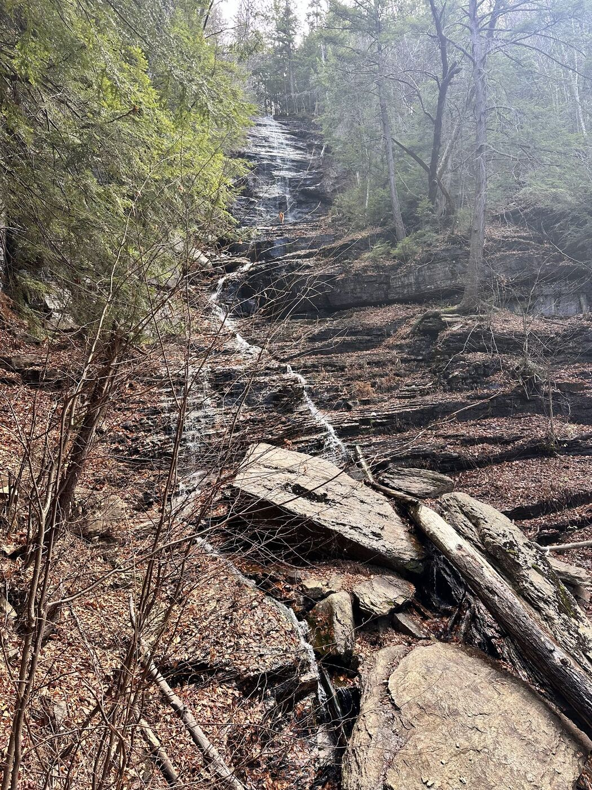

We lost sight of why we’re here.
A uniquely American cultural myth: that we are separate from the ecosystem that supports us.
The crisis is rooted in how we see ourselves.
If we reduced the world’s greenhouse gas emissions to zero tomorrow, we would still have plastic pollution, deforestation, and toxic waste dumping.
That is because the core of the problem would not have been addressed. The climate crisis is rooted in our relational cultural identities to the planet and its ecosystems, which determine our shared values as a society.
The pervasive belief that human beings are not an integrated part of our planetary ecosystem created a system that allows these impacts to persist. There is an opportunity to reclaim and redefine this relationship, especially in the United States. Our working theory has three parts:
- Culture is upstream of politics.
- People care about environmental issues in their own community.
- If the US moves, the world will follow.

Four value systems that tell us we are separate from nature.
These are uniquely “American” cultural identities, or “sociotechnical imaginaries,” a term coined by Harvard Professor Sheila Jasanoff. They are two of many, and they are learned, which means they can be examined.
Rugged individualism
An over-emphasis on the individual’s capabilities, which assumes separation from the ecosystem.
Enlightenment dualism
“Man vs. nature.” Nature is rendered inert, passive, and available for domination. Even our language absorbs this logic: “humans and animals,” as if we were not all animals.
Capitalism
Nature exists for human profit. It becomes an “externality,” while profit and shareholder value are king.
Dominion theology
The reading of Genesis in which God gives humans “dominion” over the earth.
How these values show up in everyday life
- Local flora and fauna are not part of the standard education in the US.
- It is usually more expensive to recycle than to throw garbage in the trash.
- People are disconnected from the origins of their food, from grocery stores to processed foods.
Scientists have been ringing the alarm for over 150 years.
Eunice Foote
First to show that carbon dioxide traps heat, and to predict a warmer Earth as CO₂ rises.
John Tyndall
Identified the specific atmospheric gases responsible for trapping heat: the greenhouse effect.
Svante Arrhenius
First to calculate that burning fossil fuels would measurably raise global temperatures.
Sources: Scientific American; The Conversation; NOAA Climate.gov; CFR Education, “Awareness of Human-Caused Climate Change.”
What those warnings predicted is now lived reality: longer, more destructive wildfire seasons, heavier rainfall and coastal flooding, and more intense hurricanes and wind events.
There has been progress, but not nearly enough.
Regulation and incentives swing with each election cycle. In 2025 the EPA moved to repeal the endangerment finding and power-plant emissions limits, the legal basis for regulating greenhouse gases. The Inflation Reduction Act’s clean-energy tax credits face repeated repeal efforts and new eligibility restrictions. The International Energy Agency has cut its forecast for U.S. renewable-capacity growth through 2030 by about 50%.
Both climate regulation and corporate ESG commitments have proven unreliable engines of lasting change. They are not underpinned by a cultural consistency that demands ecosystem protection as a human priority.
Sources: Climate Action Campaign rollback tracker; AP/ABC News; Center for American Progress; International Energy Agency, Renewables 2025.
Higher education focuses on technology and policy.
Harvard’s Salata Institute funds decarbonization technology, carbon-capture research, and solar geoengineering. The MIT Sloan Climate Policy Center designs policy, institutions, and economic instruments that complement frameworks like the Paris Agreement. Both are essential.
Notably absent from this conversation: the cultural values and identities driving the crisis in the first place. We certainly need the climate technologies of the future. We also need a society willing to accept and deploy them.
Something isn’t working.
Even where the technology works and the economics make sense, local opposition stops projects.
Much of this local opposition is rooted in mis- and disinformation. The Sabin Center’s companion report rebuts 38 false claims about solar, wind, EVs, and battery storage, evidence that the barrier is belief, not economics or engineering.
Source: Sabin Center for Climate Change Law, Columbia University, Renewable Energy Legal Defense Initiative (RELDI), 2025.
Help us build the first containers
We are looking for facilitators, participants, community partners, and advisors who believe understanding has to come before agreement.